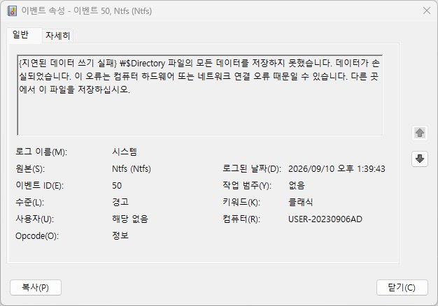

EVENT ID 50
Ntfs 이벤트 50 지연 쓰기 실패 점검
NTFS가 저장장치에 데이터를 쓰려다 실패했음을 나타냅니다. 쓰기 작업이 지연되다가 실패하는 '지연 쓰기 실패' 상황입니다.
50은 NTFS가 저장장치에 데이터를 쓰려다 실패한 '지연 쓰기 실패' 기록입니다. 쓰기 요청이 즉시 실패한 것이 아니라 지연되다가 실패했다는 점에서 연결 안정성이나 전원 관리 설정을 먼저 의심해야 합니다.
외장 드라이브에서 나타난다면 절전으로 인한 USB 선택적 절전 설정을, 내장 저장장치라면 응답 시간 초과와 SMART 상태를 함께 확인하세요.
발생 조건
- 파일 저장 직후 오류 메시지
- 외장 드라이브 분리 후 데이터 손실
- 전원 불안정 상황에서의 쓰기 작업
가능성 높은 원인
- 저장장치 응답 시간 초과
- 케이블 또는 연결 불안정
- 전원 관리로 인한 장치 슬립
점검 순서
- 해당 볼륨 레이블 확인 후 대상 드라이브 특정 — 되돌리기 쉬운 항목부터 확인해 위험 없이 범위를 줄입니다.
- 케이블 상태와 전원 관리 설정 점검 — 첫 확인 결과와 비교해 원인 후보를 좁힙니다.
- SMART 및 제조사 진단 도구로 건강 상태 확인 — 앞 단계에서 해결되지 않을 때 다음 원인을 검증합니다.
쓰기 실패 후 파일이 손상됐을 수 있으므로 저장된 데이터를 확인하세요.
실제 사용자 사례
위 점검 순서로도 원인이 불확실할 때, 실제 진단 사례를 참고하면 도움이 됩니다.
대상이 D:\$Mft·\$Directory일 때는 일반 파일과 다르게 봐야 하는 이유
한 PC의 로그를 분석하니 Ntfs 50이 12건 기록돼 있었는데, 대상 파일이 일반 문서가 아니라 D:\$Mft(5건)와 \$Directory(7건)였습니다. $Mft는 NTFS 볼륨의 모든 파일 위치를 담는 마스터 파일 테이블, $Directory는 디렉터리 구조를 담는 인덱스로 — 둘 다 사용자 파일이 아니라 볼륨 전체의 파일 시스템 구조를 이루는 메타데이터입니다. 여기에 쓰기가 실패한다는 것은 특정 파일 하나가 아니라 볼륨 전체가 위험해질 수 있다는 뜻입니다. 같은 시간대에 같은 드라이브(SAMSUNG HD502HJ)에서 Disk 51이 1,930건, storahci 129(컨트롤러 리셋)가 13건 함께 반복되고 있어 드라이브 자체의 물리적 결함으로 확인됐습니다. 전체 경위는 Disk 이벤트 51 사례에서 확인할 수 있습니다.

포인트: 지연 쓰기 실패 대상이 $Mft·$Directory·$LogFile처럼 $로 시작하는 NTFS 메타데이터 파일이라면, 일반 사용자 파일 손실보다 더 급한 신호입니다. 볼륨 자체가 마운트 불가 상태가 될 수 있으므로 SMART 결과를 기다리지 말고 즉시 백업하세요.
관련 코드·가이드
자주 묻는 질문
- 50이 뜨면 저장한 파일이 손상됐나요? 가능성이 있습니다. 이 이벤트가 발생한 직후 저장한 파일은 정상적으로 기록됐는지 다시 열어 확인하는 것이 안전합니다.
- 외장 드라이브에서만 반복되는데 원인이 뭘까요? USB 전원 관리 설정으로 장치가 절전에 들어갔다가 응답이 늦어지는 경우가 흔합니다. 장치 관리자에서 해당 드라이브의 절전 옵션을 꺼보세요.
최종 검토일: 2026-09-10